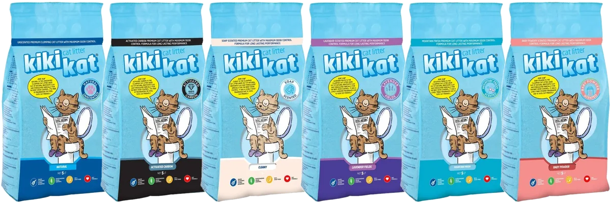
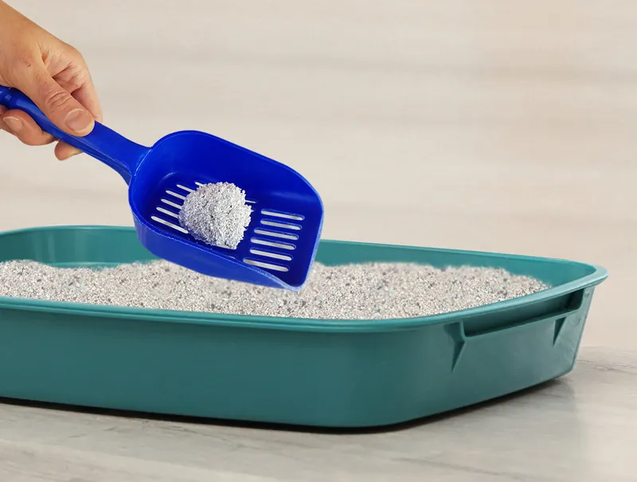

Hrudkující stelivo pro kočky z bílého bentonitu
Šest variant, balení 5 l a 10 l. Minimum prachu, pevné hrudky a výborné pohlcení pachu. Dovážíme z Turecka a dodáváme po paletách.

Proč Kiki Kat
Výborně pohlcuje pach
Jemný bílý jíl a speciální výroba váží zápach okamžitě a přirozeně.
Minimum prachu
Prašnost pod 0,5 % (údaj výrobce). Čistší okolí toalety i vzduch.
Snadné vybírání
Rychle tvoří pevné hrudky, které vyberete jedním pohybem lopatky.
Šetrné ke kočkám i lidem
Přírodní bentonit, 100% šetrný ke kočkám.
Produkty: 6 variant
Všechny varianty jsou ze stejného bílého bentonitu a liší se jen vůní. Každou dodáváme v balení 5 l a 10 l.



Proč bentonit
Bentonit je jíl, který přirozeně tvoří hrudky. Stelivo z něj má jemná i hrubší zrna. Jemná zrna se rychle spojují a kočkám je taková struktura příjemná.
Díky přírodnímu a hygienickému složení patří bentonitové stelivo k nejoblíbenějším typům. Je vysoce savé: moč i výkaly rychle vysuší, takže se toaleta snadno čistí.
1 balení = 1 kočka na 1 měsíc
Balení 5 l vystačí jedné kočce zhruba na měsíc (údaj výrobce).
Jak stelivo používat
Nasypte 7,5 cm
Do čisté toalety nasypte stelivo do výšky asi 7,5 cm.Vyberte hrudky
Pevné hrudky a výkaly vyberte lopatkou, ideálně každý den.Doplňte
Dosypte stelivo, aby vrstva zůstala na 7,5 cm.
Velkoobchod: dodáváme po paletách
Kiki Kat dovážíme přímo od výrobce z Turecka. Pro prodejny, chovatelské stanice, útulky i obce dodáme celé palety.
- všech 6 variant, balení 5 l a 10 l
- dodání po paletách v rámci ČR
- dovoz přímo od výrobce
Chcete nabídku?
Napište, kolik palet a jakých variant potřebujete a kam je dovézt. Ozveme se s cenou a termínem.
Kdo Kiki Kat vyrábí
Stelivo vyrábí turecká skupina Dönmezoğlu Group, která od roku 2003 podniká v logistice, těžbě a exportu průmyslových surovin. Kiki Kat vyrábí z bentonitu z tureckých ložisek.